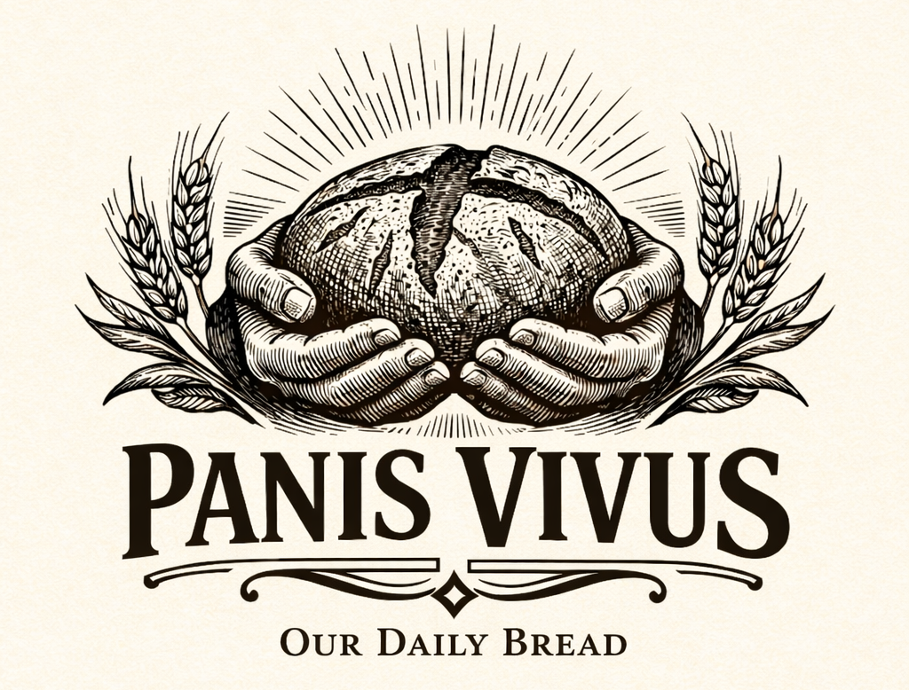

Pre-Order Artisan Sourdough Baked Fresh Weekly in NH
Artisan Sourdough • New England

Not by bread alone.
Flour. Water. Salt. And grace.
Naturally leavened artisan sourdough for pickup in Dover, NH. Our faith shapes how we bake and how we treat people—excellent bread and genuine hospitality first. Everyone is welcome; no one is a project.
Not an order or payment — helps us plan for opening.
About Us
Drawing from the timeless words “Give us this day our daily bread,” we create handcrafted sourdough that honors tradition, craftsmanship, and community.
Panis Vivus is a Christ-centered artisan bakery in Dover, NH, offering fresh artisan sourdough bread for pickup. We love people and take our craft seriously—excellence in the loaf, integrity in how we treat neighbors, customers, and partners. The future vision of our storefront will offer pickup orders (only current option), dine-in selection, and communal events—from baking workshops to live music and educational talks.
We are not here to preach at the counter. We are here to make bread worth returning for. If you want to talk about the Lord, we will gladly share; if you prefer quiet, small talk, or simply your loaf in a bag, we are glad for that too. Everyone is welcome—every background, every story, and every palate.
We partner with Simply Bread to bring you the finest naturally leavened bread—artisan bakery preorder bread baked with care and delivered fresh for weekly pickup.
Our Values
- Reverence
- Craft
- Community
- Hospitality
- Simplicity
- Faith
Our Bread
Flour. Water. Salt. And grace. From proofing to the final loaf.
Order Your Bread
Tell us what you’d like once our storefront is live — this helps us plan inventory and pickup. Checkout will be through Simply Bread when ordering opens.
Pre-order interest
Share preferences in our short form. This is not an order or payment yet. When pre-orders go live, you’ll complete payment in the Simply Bread storefront.
Pre-order interestOpens in a new tab
When the storefront is active: choose bake day & pickup time in Simply Bread; new customers create an account at checkout.
What People Say
“The best artisan sourdough in the Seacoast. Every loaf is a gift.”
— Local customer, Dover NH
“Pre-ordering is so easy—I pick up fresh bread every week. Can’t imagine life without it.”
— Regular customer
“Naturally leavened, handcrafted with care. This is what bread should taste like.”
— New England food lover
Contact Us
Get in Touch
We’d love to hear from you—whether you have questions about our bread, want to discuss wholesale partnerships, or are interested in our workshops and events.
Our Daily Bread LLC
Dover, New Hampshire